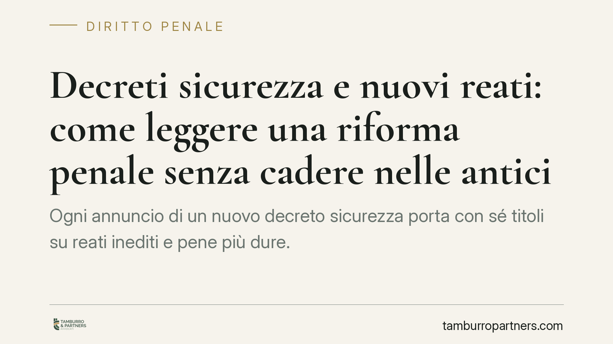

Decreti sicurezza e nuovi reati: come leggere una riforma penale senza cadere nelle anticipazioni
Ogni annuncio di un nuovo "decreto sicurezza" porta con sé titoli su reati inediti e pene più dure. Prima di valutare gli effetti occorre però verificare se il provvedimento esiste, è stato pubblicato in Gazzetta Ufficiale ed è davvero in vigore. Spieghiamo i principi che governano un decreto-legge penale e come leggerlo senza equivoci.

Perché la verifica della fonte viene prima di tutto
La cronaca giuridica anticipa spesso i contenuti di un provvedimento prima che il testo definitivo sia disponibile. Nel diritto penale questa distanza tra annuncio e norma vigente non è un dettaglio: finché un decreto non è pubblicato in Gazzetta Ufficiale con numero e data certi, i suoi contenuti restano indicazioni politiche, non regole applicabili.
Per questo motivo non riportiamo qui estremi, numeri di articolo o nuove fattispecie di un decreto non riscontrabile nel testo ufficiale. Riferimenti come un presunto "nuovo reato di violenza nelle manifestazioni" collocato in un determinato articolo del codice penale vanno confermati sul testo pubblicato: una citazione sbagliata, su un tema penale, produce informazione fuorviante. Preferiamo spiegare i meccanismi stabili che permettono a chiunque di valutare correttamente una riforma, quando il testo sarà disponibile.
Come funziona un decreto-legge in materia penale
Il decreto-legge è uno strumento che il Governo adotta in casi straordinari di necessità e urgenza. Secondo l'articolo 77 della Costituzione, entra in vigore subito dopo la pubblicazione in Gazzetta Ufficiale, ma deve essere convertito in legge dal Parlamento entro sessanta giorni, altrimenti decade con effetto retroattivo (ex tunc).
Questo significa che le norme introdotte da un decreto non ancora convertito sono provvisorie. In sede di conversione il Parlamento può modificarle, sopprimerle o integrarle. Valutare l'impatto di una riforma penale sulla base del solo testo del decreto, prima della conversione, è quindi prematuro.
Irretroattività: il limite che vale sempre
Un principio resta fermo a prescindere dal contenuto del singolo provvedimento: la norma penale sfavorevole non è retroattiva. Lo stabiliscono l'articolo 25, secondo comma, della Costituzione e l'articolo 2 del codice penale.
In concreto: un nuovo reato o un aumento di pena si applica soltanto ai fatti commessi dopo l'entrata in vigore della norma. Non è possibile punire oggi una condotta che, al momento in cui fu tenuta, non era reato o era punita meno severamente. Vale invece il contrario quando la legge successiva è più favorevole (principio della lex mitior).
Le "cornici edittali": cosa sono
Quando si parla di "pene più severe" si fa riferimento spesso alle cornici edittali, cioè al minimo e al massimo di pena previsti per un reato. Il giudice sceglie la pena concreta all'interno di questa cornice, valutando gravità del fatto e personalità dell'autore.
Un inasprimento può agire alzando il minimo, il massimo, o entrambi; oppure introducendo aggravanti che spostano verso l'alto l'intera forbice. Capire su quale leva incide la riforma è essenziale per valutarne l'effetto reale, che non è mai automatico.
La giustizia minorile ha regole proprie
Ogni intervento che tocca i minori si confronta con un sistema a sé. L'articolo 31 della Costituzione impone la protezione dell'infanzia e della gioventù, e il d.P.R. 448/1988 disegna un processo penale minorile orientato al recupero, non alla sola punizione.
Strumenti come la messa alla prova, l'irrilevanza del fatto e il perdono giudiziale riflettono questa finalità rieducativa. Una riforma che intervenga su questo terreno va letta alla luce di tali principi, che restano un parametro di legittimità costituzionale.
Cosa fare in concreto
- Verificare la fonte ufficiale. Prima di dare per acquisita una nuova norma, controllare la pubblicazione in Gazzetta Ufficiale, con numero e data del provvedimento.
- Distinguere decreto e conversione. Tenere presente che il testo può cambiare entro sessanta giorni e che il mancato esito fa decadere il decreto.
- Collocare i fatti nel tempo. Annotare con precisione la data delle condotte rilevanti: l'irretroattività della norma sfavorevole dipende da quel riferimento temporale.
- Leggere le pene come cornici. Interpretare l'inasprimento in termini di minimo, massimo e aggravanti, senza assumere aumenti automatici.
- Confrontarsi con un difensore. Di fronte a una contestazione penale è opportuno un confronto tecnico prima di qualsiasi iniziativa, specie se sono coinvolti minori, per i quali operano garanzie e procedure dedicate.
Quando il testo definitivo sarà disponibile e verificabile, torneremo sui contenuti specifici con l'analisi puntuale delle singole fattispecie.
---
Contributo informativo a cura di Tamburro & Partners Avvocati - Avv. Giuseppe Tamburro. Non costituisce parere legale.
Ogni condominio ha una storia a sé.
Se gestisci un'amministrazione e vuoi un confronto su una specifica questione condominiale, scrivi allo studio. Ti rispondiamo entro un giorno lavorativo.